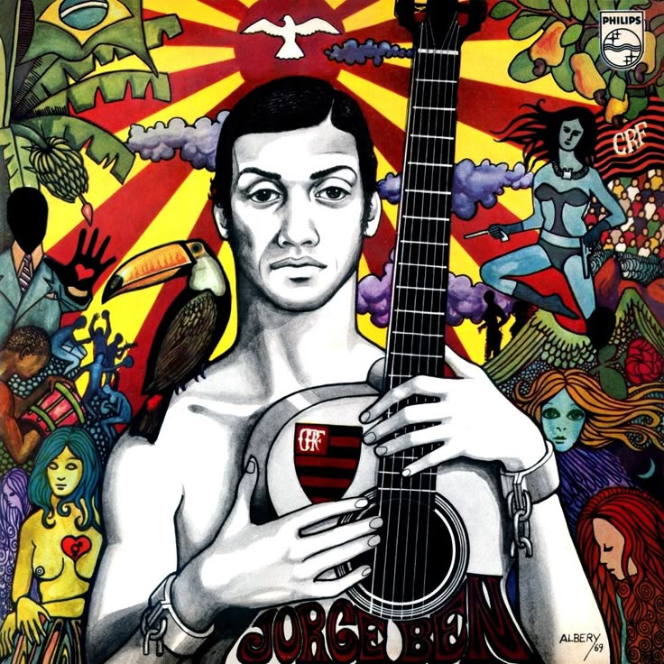
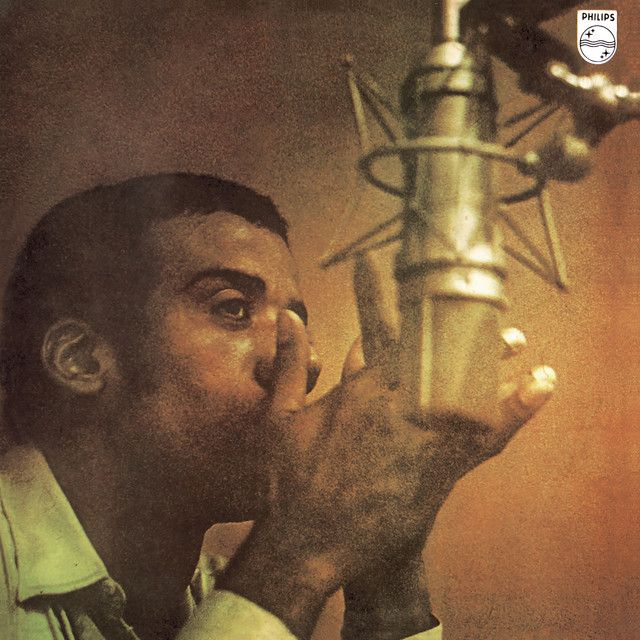
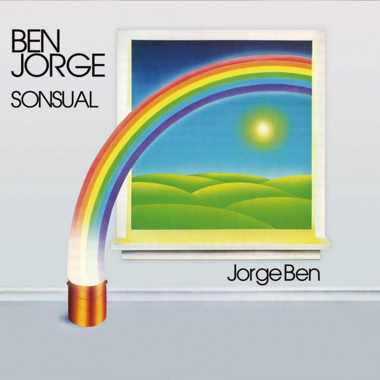
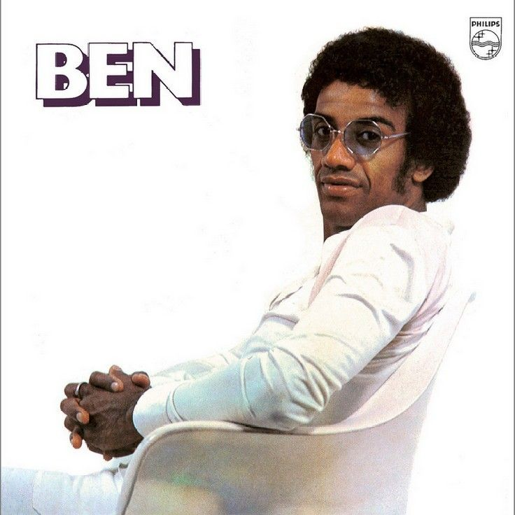
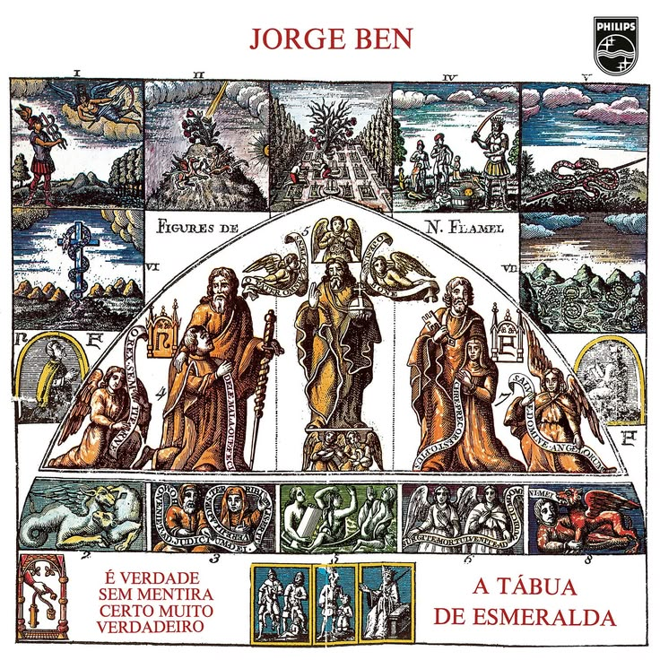

Samba Esquema Novo
1963 – O álbum de estreia que lançou “Mas Que Nada”, "Chove Chuva" e marcou o início de uma nova era no samba.
1963 – O álbum de estreia que lançou “Mas Que Nada”, "Chove Chuva" e marcou o início de uma nova era no samba.

1969 – Disco icônico com “País Tropical”, “Que Pena” e “Criola”. Um clássico absoluto.

1970 – Ritmo poderoso e letras afiadas. Um dos trabalhos mais elétricos da carreira.

1984 – Álbum cheio de suingue e sensualidade, com o clima dançante característico de Jorge Ben Jor.

1972 – Álbum recheado de suingue, com “Taj Mahal” e o espírito livre de Jorge.

1974 – Obra-prima mística e filosófica. Considerado por muitos o auge artístico dele.

1975 – Alegria, cores e o clássico “Jorge de Capadócia”. Puro prazer sonoro.
1978 – Disco alegre e contagiante, com o sucesso “Amante Amado” e muito suingue.